Seenivasan Lalithkumar
PhD Candidate |
|
|


Short Biography
I am currently a fourth-year PhD candidate at the Medical Mechatronics Lab (MMLAB), Department of Biomedical Engineering, National University of Singapore, supervised by Prof. Ren Hongliang. I received my Bachelor's degree (Hons) in Electrical Engineering from the National University of Singapore and my Diploma in Mechatronics from Temasek Polytechnic, Singapore.
My research interests include artificial intelligence and its applications in robotic surgery. My current research topics include:
- Scene understanding in robotic surgery - semantic segmentation, surgical scene graph, surgical data science, and surgical action & phase recognition.
- Natural language processing in robotic surgery - surgical visual question answering and surgical scene captioning.
News Feeds
- [02/2023] A book chapter on Untethered Soft Ferromagnetic Quad-Jaws Cootie Catcher with Selectively Coupled Degrees of Freedom got accepted.
- [02/2023] A paper on Paced-Curriculum Distillation with Prediction and Label Uncertainty for Image Segmentation accepted in International Journal of Computer Assisted Radiology and Surgery.
- [01/2023] A paper on Surgical-VQLA: Transformer with Gated Vision-Language Embedding for Visual Question Localized-Answering in Robotic Surgery accepted in IEEE ICRA 2023 Conference.
- [01/2023] A paper on Task-aware asynchronous multi-task model with class incremental contrastive learning for surgical scene understanding accepted in International Journal of Computer Assisted Radiology and Surgery.
- [10/2022] A paper on Rethinking Feature Extraction: Gradient-Based Localized Feature Extraction for End-To-End Surgical Downstream Tasks accepted in both IEEE RA-L Journal and IEEE ICRA 2023 Conference.
- [09/2022] Participated in SimCol-to-3D 2022 - 3D Reconstruction During Colonoscopy in MICCAI 2022 Conference.
- [09/2022] Presenting my paper on Surgical-VQA: Visual Question Answering in Surgical Scenes Using Transformer accepted in MICCAI 2022 Conference.
- [06/2022] A paper on Surgical-VQA: Visual Question Answering in Surgical Scenes Using Transformer accepted in MICCAI 2022 Conference.
- [05/2022] Presented my paper on on Global-Reasoned Multi-Task Learning Model for Surgical Scene Understanding at IEEE ICRA 2022 Conference.
- [05/2022] A paper on Biomimetic Incremental Domain Generalization with a Graph Network for Surgical Scene Understanding accepted in MDPI Biomimetics Journal.
- [01/2022] A paper on Global-Reasoned Multi-Task Learning Model for Surgical Scene Understanding accepted in both IEEE RA-L Journal and IEEE ICRA 2022 Conference.
- [10/2021] Participated in PEg TRAnsfer Workflow Recognition Challenge Report: Do Multi-Modal Data Improve Recognition? in MICCAI 2021 Conference.
- [10/2021] Participated in CholecTriplet2021: A benchmark challenge for surgical action triplet recognition in MICCAI 2021 Conference.
- [09/2021] A paper on Class-Distribution-Aware Calibration for Long-Tailed Visual Recognition is accepted in UDL Workshop, ICML 2021 Conference.
- [08/2021] A paper on ScoopNet: 6DOF Pose Estimation pipeline for Origami-inspired Worm Robots is accepted in IEEE ICDL 2021 Conference.
- [03/2021] A paper on Shape Tracking of Flexible Morphing Matters From Depth Images is accepted in IEEE Sensors Journal.
- [07/2020] A paper on Stent Deployment Detection Using Radio Frequency-Based Sensor and Convolutional Neural Networks accepted in Advanced Intelligent Systems Journal.
- [07/2020] A book chapter on Tunable stiffness using negative Poisson's ratio toward load-bearing continuum tubular mechanisms in medical robotics got accepted.
- [06/2020] A book chapter on Tendon routing and anchoring for cable-driven single-port surgical manipulators with spring backbones and luminal constraints got accepted.
- [06/2020] A paper on Graph Structure Representation in Robotic Surgery accepted in MICCAI 2020 Conference.
- [08/2019] Started my PhD under Prof. Ren Hongliang at National University of Singapore.
Key Publications
(* Co-first author)| 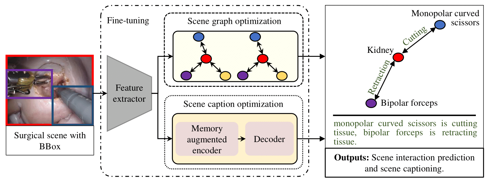 |
Task-aware asynchronous multi-task model with class incremen-
tal contrastive learning for surgical scene understanding. Lalithkumar Seenivasan, Mobarakol Islam, Mengya Xu, Chwee Ming Lim and Hongliang Ren. International Journal of Computer Assisted Radiology and Surgery (IJCARS), 2023. |

|
Rethinking Feature Extraction: Gradient-Based Localized Feature Extraction for End-To-End Surgical Downstream Tasks. Winnie Pang*, Mobarakol Islam*, Sai Mitheran, Lalithkumar Seenivasan, Mengya Xu and Hongliang Ren. IEEE Robotics and Automation Letters & IEEE International Conference on Robotics and Automation (RA-L & ICRA), 2023. |
| 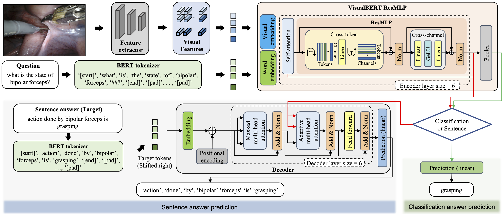 |
Surgical-VQA: Visual Question Answering in Surgical Scenes Using Transformer. Lalithkumar Seenivasan*, Mobarakol Islam*, Adithya K. Krishna and Hongliang Ren. Medical Image Computing and Computer-Assisted Intervention (MICCAI), 2022. |
| 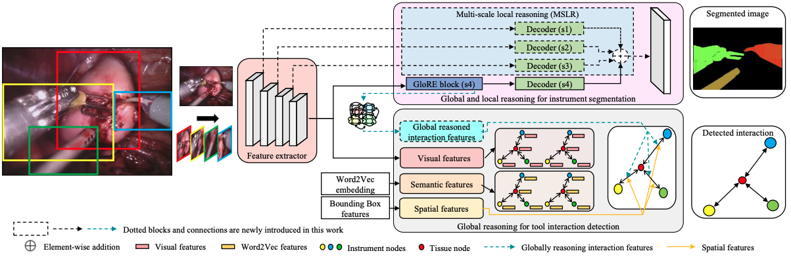 |
Global-Reasoned Multi-Task Learning Model for Surgical Scene Understanding. Lalithkumar Seenivasan, Sai Mitheran, Mobarakol Islam and Hongliang Ren. IEEE Robotics and Automation Letters & IEEE International Conference on Robotics and Automation (RA-L & ICRA), 2022. |
| 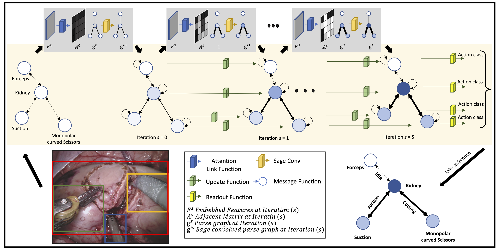 |
Learning and Reasoning with the Graph Structure Representation in Robotic Surgery. Mobarakol Islam, Lalithkumar Seenivasan, Lim Chwee Ming and Hongliang Ren. Medical Image Computing and Computer Assisted Intervention (MICCAI), 2020. |
Dataset Release
Key Awards
Key Talks and Presentations
-
Surgical-VQA: Visual Question Answering in Surgical Scenes Using Transformer.
Medical Image Computing and Computer-Assisted Intervention (MICCAI), Singapore, Sep. 2022. -
CLEARNESS: Cross-scaLe tEmporAl gRaph NEtwork for Super-reSolutions.
IUPESM WORLD CONGRESS ON MEDICAL PHYSICS AND BIOMEDICAL ENGINEERING, Singapore, Jun. 2022. -
Global-Reasoned Multi-Task Learning Model for Surgical Scene Understanding.
IEEE International Conference on Robotics and Automation, Philadelphia, May. 2022.
Academic Services
- Program Committee, DART Workshop, Medical Image Computing and Computer Assisted Intervention (MICCAI), 2022.
- Reviewer:
- IEEE Transactions on Medical Imaging (2023).
- IEEE International Conference on Robotics and Automation (2023).
- DART Workshop, Medical Image Computing and Computer Assisted Intervention (2022).
- IEEE Sensors Journal (2022).
© Seenivasan Lalithkumar | Last updated: Feb 2023
| 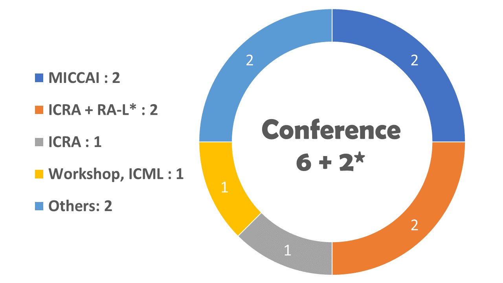 | 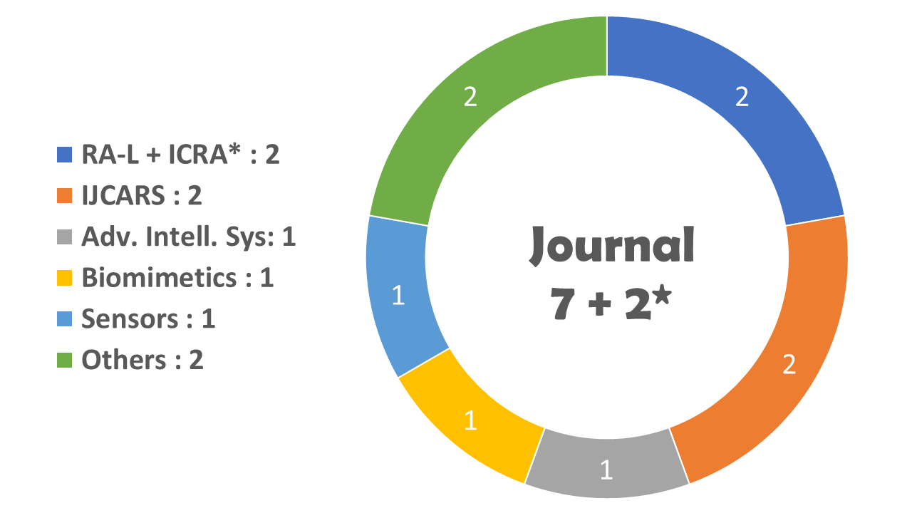 |
Conference and Journal Publications
| 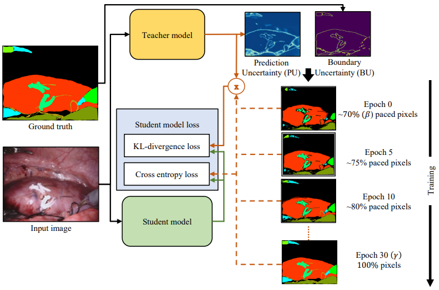 |
Paced-Curriculum Distillation with Prediction and Label Uncertainty for Image Segmentation. Mobarakol Islam*, Lalithkumar Seenivasan*, SP Sharan, VK Viekash, Bhavesh Gupta, Ben Glocker and Hongliang Ren. International Journal of Computer Assisted Radiology and Surgery (IJCARS), 2023. |
|
Task-aware asynchronous multi-task model with class incremen-
tal contrastive learning for surgical scene understanding. Lalithkumar Seenivasan, Mobarakol Islam, Mengya Xu, Chwee Ming Lim and Hongliang Ren. International Journal of Computer Assisted Radiology and Surgery (IJCARS), 2023. |
|
|
|
Rethinking Feature Extraction: Gradient-Based Localized Feature Extraction for End-To-End Surgical Downstream Tasks. Winnie Pang*, Mobarakol Islam*, Sai Mitheran, Lalithkumar Seenivasan, Mengya Xu and Hongliang Ren. IEEE Robotics and Automation Letters & IEEE International Conference on Robotics and Automation (RA-L & ICRA), 2023. |
|
Surgical-VQA: Visual Question Answering in Surgical Scenes Using Transformer. Lalithkumar Seenivasan*, Mobarakol Islam*, Adithya K. Krishna and Hongliang Ren. Medical Image Computing and Computer-Assisted Intervention (MICCAI), 2022. |
|
| 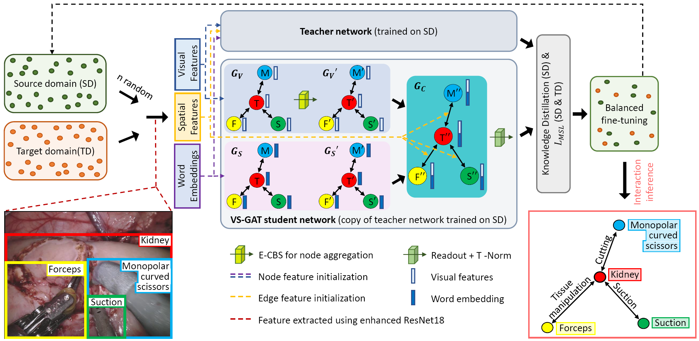 |
Biomimetic Incremental Domain Generalization with a Graph Network for Surgical Scene Understanding. Lalithkumar Seenivasan, Mobarakol Islam, Chi-Fai Ng, Chwee Ming Lim and Hongliang Ren. MDPI Biomimetics Journal (Biomimetics), 2022. |
|
Global-Reasoned Multi-Task Learning Model for Surgical Scene Understanding. Lalithkumar Seenivasan, Sai Mitheran, Mobarakol Islam and Hongliang Ren. IEEE Robotics and Automation Letters & IEEE International Conference on Robotics and Automation (RA-L & ICRA), 2022. |
|
| 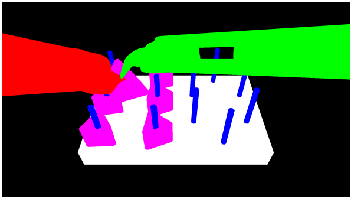 |
PEg TRAnsfer Workflow Recognition Challenge Report: Do Multi-Modal Data Improve Recognition?. Arnaud Huaulmé, et. al, ...... Lalithkumar Seenivasan and Pierre Jannin. EndoVis21 Challenge, Medical Image Computing and Computer Assisted Intervention (Challenge, MICCAI), 2021. [preprint] |
| 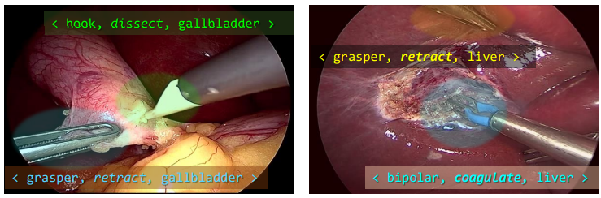 |
CholecTriplet2021: A benchmark challenge for surgical action triplet recognition. Chinedu Innocent Nwoye, et. al, ...... Lalithkumar Seenivasan and Nicolas Padoy. EndoVis21 Challenge, Medical Image Computing and Computer Assisted Intervention (Challenge, MICCAI), 2021. [preprint] |
| 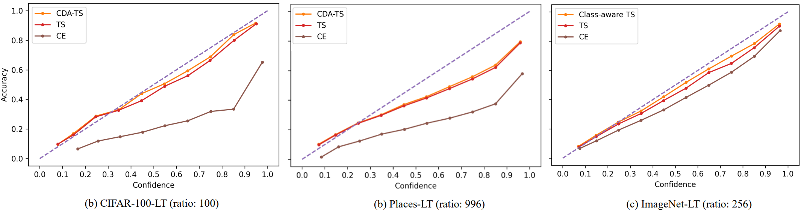 |
Class-Distribution-Aware Calibration for Long-Tailed Visual Recognition. Mobarakol Islam, Lalithkumar Seenivasan, Hongliang Ren and Ben Glocker. UDL Workshop, International Conference on Machine Learning (UDL , ICML), 2021. [preprint] |
| 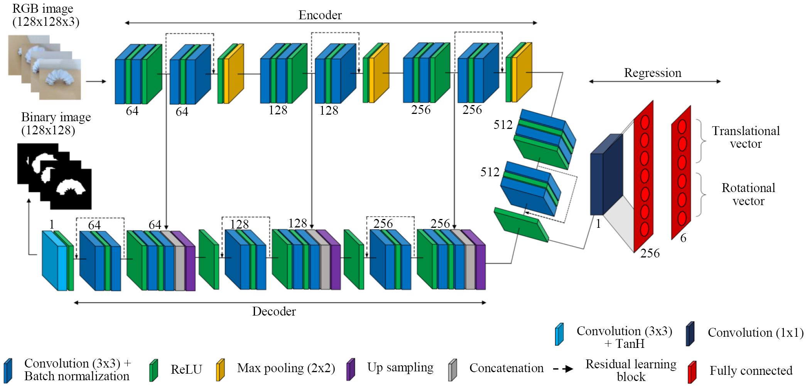 |
ScoopNet: 6DOF Pose Estimation pipeline for Origami-inspired Worm Robots. Rohit Lal, Ruphan Swaminathan, Lalithkumar Seenivasan, Liang Qiu and Hongliang Ren. IEEE International Conference on Development and Learning (ICDL), 2021. |
|
|
Shape Tracking of Flexible Morphing Matters From Depth Images. Lalithkumar Seenivasan, Fan Bai, Ming Ji, Xiaoyi Gu, Zion Tsz Ho Tse and Hongliang Ren. IEEE Sensors Journal, 2021. [preprint] |
| 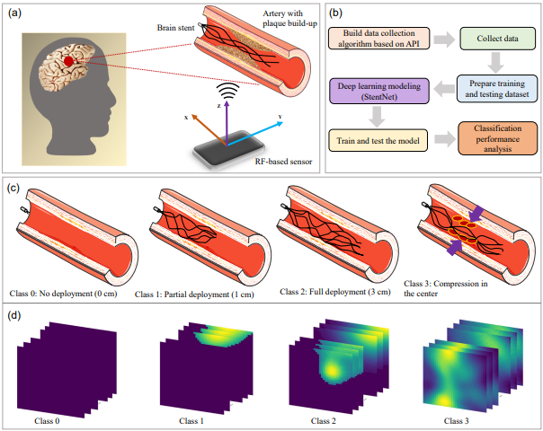 |
Stent Deployment Detection Using Radio Frequency‐Based Sensor and Convolutional Neural Networks. Mengya Xu*, Lalithkumar Seenivasan*, Leonard Leong Litt Yeo and Hongliang Ren. Advanced Intelligent Systems (Adv. Intell. Syst.), 2020. |
|
Learning and Reasoning with the Graph Structure Representation in Robotic Surgery. Mobarakol Islam, Lalithkumar Seenivasan, Lim Chwee Ming and Hongliang Ren. Medical Image Computing and Computer Assisted Intervention (MICCAI), 2020. |
|
| 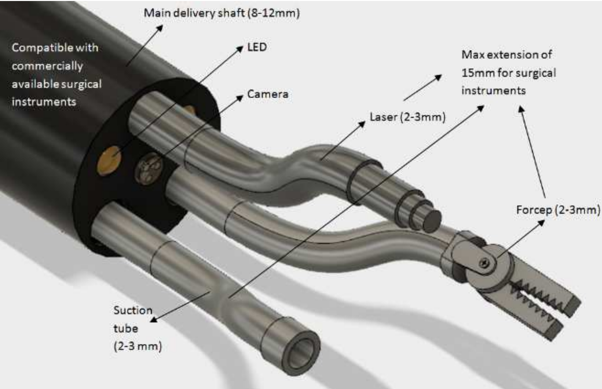 |
Pilot Study and Design Conceptualization for a Slim Single-port Surgical Manipulator with
Spring Backbones and Catheter-size Channels. Hongliang Ren, Cai Xin Chen, Catherine Cai, Krishna Ramachandra and Lalithkumar Seenivasan. IEEE International Conference on Information and Automation (ICIA), 2017. [preprint] |
Book Chapter Publications
| 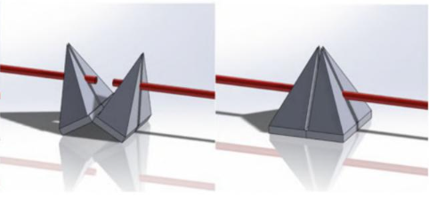 |
Untethered Soft Ferromagnetic Quad-Jaws Cootie Catcher with Selectively Coupled Degrees of Freedom. Xinchen Cai, Catherine Jiayi Cai, Lalithkumar Seenivasan, Zion Tse and Hongliang Ren. Deployable Multimodal Machine Intelligence: Applications in Biomedical Engineering, Springer Nature Singapore, 2023. [preprint] |
| 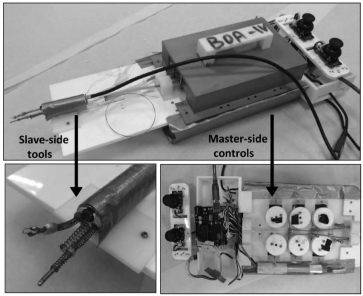 |
Tendon routing and anchoring for cable-driven single-port surgical manipulators
with spring backbones and luminal constraints. Lalithkumar Seenivasan, Xinchen Cai, Krishna Ramachandra, Francis Wong and Hongliang Ren. Flexible Robotics in Medicine: A Design Journey of Motion Generation Mechanisms and Biorobotic System Development, Academic Press, 2020. [preprint] |
| 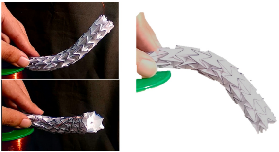 |
Tunable stiffness using negative Poisson's ratio toward load-bearing continuum tubular mechanisms in medical robotics. Krishna Ramachandra, Catherine Jiayi Cai, Lalithkumar Seenivasan, Xinchen Cai, Zion Tszho Tse and Hongliang Ren. Control Theory in Biomedical Engineering, Academic Press, 2020. [preprint] |